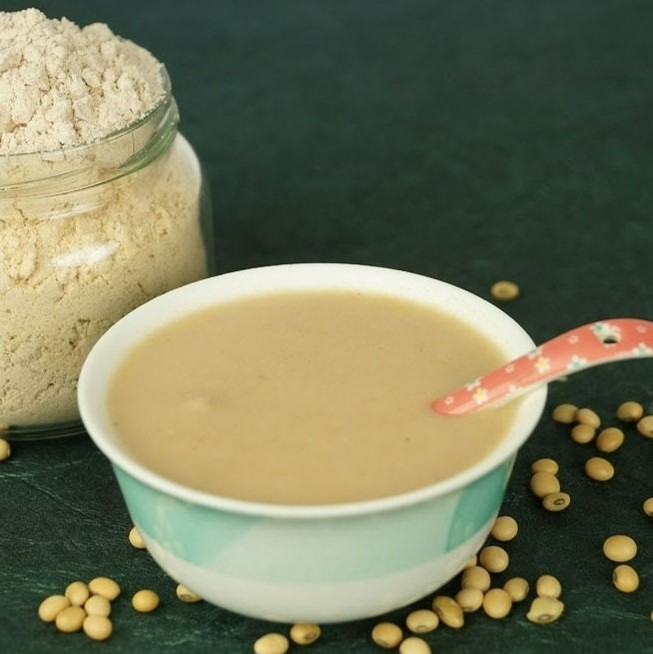
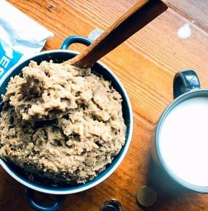
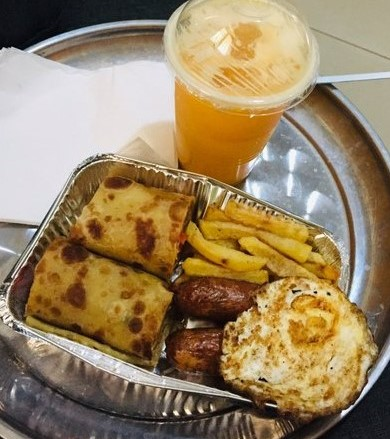

Hot milk with sweet scented tea grown in uganda. Perfect with simple bites to start your day
€ 2.10
At times it is spiced with ginger, lemon grass, and or bay leaves. And, like African tea, it is best served very hot with “accompaniments”
€ 1.30

You can have this plain as it is. Milk can be added. Commonly taken withour sugar
€ 2.55
Made of deep fried cassava slices. This meal is "heavy". You may not feel like eating for the next 10 hours
€ 0.80
East African version of fried dough and is somewhat reminiscent of a doughnut
€ 0.26

The sundried sweet potatoes originally meant to be a food for the dry season can today be enjoyed at anytime for breakfast or with a main meal.
€ 3.20
Katogo basically means adding whatever ingredients available in a sauce pan and putting them on a stove until everything is cooked. This version is matooke (green banana) with gravy
€ 4.50
are used in many African countries as a base for a savoury sauce for meat or vegetables. This form of katogo is pasted with groundnuts
€ 4.50
Made by combining an egg omelette and vegetables wrapped in a chapati, it is quick to prepare, and can be eaten at any time of the day, from breakfast to a lunch or supper meal or snack
€ 3.80

This is more of a coporate breakfast for the working class. Comes with a pair of beef sausages, and egg omelette, rolex, abit of fries, and a glass of fresh blended juice